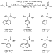

Palladium-Catalyzed  -Arylation of
Carbonyl Compounds and Nitriles
-Arylation of
Carbonyl Compounds and Nitriles
Web Release Date: January 23,
Palladium-Catalyzed -Arylation of
Carbonyl Compounds and Nitriles
Department of Chemistry, Yale University, P.O. Box 208107, New Haven, Connecticut 06520-8107
Received September 6, 2002
Abstract:
The palladium-catalyzed -arylation of
ketones has become a useful and general synthetic method. In this process, an
enolate is generated from a ketone and base in the presence of an aryl halide,
and a palladium catalyst couples this enolate with the aryl halide. With the
advent of new catalysts composed of sterically hindered, electron-rich
alkylphosphine and N-heterocyclic carbene ligands, this process now
encompasses a broad range of enolates and related anions, including those
derived from amides, esters, aldehydes, nitriles, malonates, cyanoesters,
nitroalkanes, sulfones, and lactones. In the proposed mechanism for this
reaction, the carbon-carbon bond of the product is formed by reductive
elimination from an arylpalladium enolate intermediate. The structures and
reactions of arylpalladium complexes of enolate, cyanoalkyl, and malonate ions
have been studied to determine how the binding mode and electronic and steric
parameters influence the rate and mechanism of reductive elimination.
The deprotonation of ketones and addition of the resulting enolate
nucleophile to alkyl halide electrophiles is presented in every introductory
organic chemistry course. Reactions of aromatic compounds, including aryl
halides, are also presented, but these reactions occur predominantly between
aromatic compounds and electrophiles, not nucleophiles.1
Enolate nucleophiles and aromatic halides are rarely reaction partners, even
though many natural products, pharmaceutical candidates, synthetic
intermediates, and precursors to emissive polymers possess an aromatic unit
attached at the -position of a ketone, ester, or amide.
Transition metal-catalyzed cross-coupling has become a common method to add a
variety of main-group carbon nucleophiles, such as Grignard reagents, tin
reagents, or boronic acids, to aryl halides.2
However, catalysts for these reactions generally failed to induce reactions of
enolates with aryl and vinyl halides or did so with narrow scope. The few
palladium-catalyzed couplings of enolates with aryl or vinyl halides known in
1997 usually required preformed zinc3
or tin enolates4-7
A plausible catalytic cycle for the palladium-catalyzed addition of enolates
to aryl halides is shown in Scheme 1. Oxidative addition of an aryl halide to a
Pd(0) complex would form an arylpalladium(II) halide complex (1).
Substitution of the coordinated halide by an enolate nucleophile and reductive
elimination from the resulting palladium enolate complex (2a or
2b) would form the -aryl ketone,
ester, or amide and regenerate the Pd(0) complex that started the cycle.
| Scheme 1 |
To develop the coupling of enolates with aryl halides by this mechanism, one must confront several challenges. For instance, the pKa values of mono- and dicarbonyl compounds in organic solvents vary from 12 to 35.10 Thus, electronic effects could have a large influence on the reaction chemistry. Moreover, alkali metal enolates are typically generated and allowed to react at low temperatures, but cross-coupling is usually conducted at elevated temperatures. Thus, uncatalyzed condensation chemistry of the enolate could occur before the desired catalytic coupling. Furthermore, C-bound enolates of transition metals, other than those from methyl carbonyl compounds, bear -hydrogens. -Hydrogen elimination could, therefore, compete with reductive elimination to form the desired coupled product.
The structures of the arylpalladium enolates could also vary from substrate
to substrate. The structures of transition metal enolates include C-bound11-14
Despite these hurdles, the palladium-catalyzed arylation of carbonyl
compounds has become a useful and general synthetic method. In 1997, our group19
and those of Buchwald20
and Miura21
reported concurrently the palladium-catalyzed direct coupling of ketones with
aryl bromides. This method displayed a high degree of regioselectivity and
functional group tolerance. Improved catalysts have allowed this reaction to
encompass ketones,22-27-arylation.29,43-45-arylation of
carbonyl compounds46
and the development of a mechanistic understanding of the product-forming
reductive elimination step.
A. Initial Discovery. The discovery of the palladium-catalyzed -arylation of
carbonyl compounds in our laboratory occurred during studies of the
palladium-catalyzed amination of aryl halides.47
While evaluating reactions of amines with phenyl bromide in acetone solvent, we
observed phenylacetone as a reaction product. This experiment prompted us to
appreciate that the similar pKa values of arylamines and
ketones10 could allow for the coupling of aryl halides with enolates
in the presence of base and palladium catalyst. Indeed, we found that the
combination of Pd(dba)2 and certain phosphine ligands catalyzed the
coupling of aryl bromides and iodides with ketones in the presence of
base.19 Related arylations of ketones were reported concurrently by
Palucki and Buchwald with BINAP-ligated palladium and by Miura et al. with
ligandless palladium dichloride.21
As illustrated in Scheme 2, the palladium-catalyzed arylation of ketones
showed promise as a general method for obtaining -aryl ketones.
Secondary, tertiary, and quaternary carbon centers were formed, and the reaction
displayed high selectivity for monoarylation of substrates that could undergo
diarylation. The reaction encompassed electron-rich, electron-poor, and
sterically hindered or unhindered aryl bromides. Most surprising, a high yield
of coupled product was observed from reactions of enolates that would possess
-hydrogens when bound to the metal through the -carbon.
Higher yields were observed with some dialkyl ketones when BINAP-ligated
palladium catalysts were used,20 and ligandless catalysts are
advantageous for large-scale processes.21 However, reactions
catalyzed by any of the palladium complexes of the initial studies required high
catalyst loadings, gave modest yields in several cases, and were conducted at
elevated temperatures.
| Scheme 2 |
B. Catalyst Improvement. We initially employed palladium complexes of bis(diphenylphosphino)ferrocene (DPPF) as catalyst because we expected that chelating ligands would inhibit -hydrogen elimination of the arylpalladium enolates by rendering the intermediate palladium complex four-coordinate and preventing the generation of open coordination sites necessary for -hydrogen elimination.48 Reactions catalyzed by complexes of a hindered analogue of DPPF, 1,1'-bis(di-o-tolylphosphino)ferrocene (DTPF), were more efficient than those catalyzed by complexes of DPPF.19 Because the oxidative addition of aryl halides and reductive elimination of product both involve a low-coordinate Pd(0) intermediate, we reasoned that increased steric properties of the ligand should increase the energy of the stable, higher-coordinate species. This increased energy of the ground state would decrease the relative energy of the reactive intermediate and, most likely, increase the reaction rate. We also postulated that alkyl substituents at phosphorus would promote oxidative addition by making the metal more electron-rich and would increase catalyst lifetime by disfavoring cleavage of the ligand P-C bonds.
As shown in Scheme 3, a palladium catalyst containing the hindered alkyl
bisphosphine 1,1'-bis(di-tert-butylphosphino)ferrocene
(DtBPF)22 provided fast rates for the
cross-coupling of aryl halides with ketones. In some cases, turnover numbers
reached 20 000 in a few hours at only 70  C, and many reactions
occurred at room temperature. In addition, this catalyst coupled ketone enolates
with unactivated chloroarenes and, for the first time, coupled a malonate with
an unactivated chloroarene.
C, and many reactions
occurred at room temperature. In addition, this catalyst coupled ketone enolates
with unactivated chloroarenes and, for the first time, coupled a malonate with
an unactivated chloroarene.
| Scheme 3 |
Although it contains two phosphorus donors, DtBPF was ligated to the metal in an 1-fashion in the arylpalladium enolate intermediates.22 This finding cast doubt upon our postulate that chelation was needed to observe reductive elimination instead of -hydrogen elimination.
Indeed, palladium complexes of simple, sterically hindered monophosphines,
such as tri(tert-butyl)phosphine (P(t-Bu)3), catalyzed
reactions of ketones with aryl halides in high yields with high turnover numbers
(Scheme 4).22 Reactions of methyl aryl ketones occurred selectively
to form the product from monoarylation when 2 equiv of base was used to ensure
that the ketone reagent and the monoarylated product, which is more acidic, both
existed in their enolate form. Ketones with two enolizable positions were
preferentially arylated at the least hindered site. Buchwald and co-workers have
prepared sterically hindered, electron-rich o-biphenyl monophosphines
that also generate highly active palladium catalysts for the -arylation of
ketones and provide high selectivity for reaction at the less hindered position
of dialkyl ketones.24 Beller et al. have reported that palladium
complexes of n-butyldi(1-adamantyl)phosphine are highly efficient for the
arylation of acetophenones with aryl chlorides.26
| Scheme 4 |
A. Amides. Although extension of the methods for the
palladium-catalyzed arylation of ketones to the arylation of amides appeared
conceptually simple, and reactions of carboxylic acid derivatives present fewer
regiochemical challenges, the higher pKa's of
amides10 detracted from the intermolecular reaction. Reactions of
amides with aryl halides catalyzed by complexes of DTPF or
P(t-Bu)3 occurred in low yields. However, palladium complexes
of DPPF or BINAP did catalyze the arylation of selected amides (Scheme
5).28 Coupling of unfunctionalized and electron-rich aryl bromides
with N,N-dimethylacetamide afforded -aryl amides
in moderate to good yields when conducted with at least 2 equiv of
KN(SiMe3)2 base. Products from diarylation of acetamides
formed more readily than did those of methyl ketones, most likely because the
pKa of the starting amide is higher and the
pKa of the product is lower than that of the base.
Hydrodehalogenation of the aryl halide also limited the intermolecular arylation
of amides: aryl bromides with N,N-dimethylpropionamide formed
arene as the major product.
| Scheme 5 |
In contrast, the intramolecular palladium-catalyzed -arylation of
amides to form oxindoles tolerated a range of steric and electronic properties
of the aryl halide substituent.28,29 The intramolecular arylation
catalyzed by Pd(dba)2, BINAP, and sodium tert-butoxide formed
oxindoles in moderate to good yields during initial studies,28 but
sterically hindered alkylphosphines generated more active catalysts. Complexes
of PCy3 or the sterically hindered carbene precursor,
N,N'-bis(2,6-diisopropylphenyl)-4,5-dihydroimidazolium (SIPr),49
catalyzed the formation of oxindoles at lower temperatures and catalyst loadings
than did complexes of BINAP (Scheme 6).29 A less hindered phosphine
than P(t-Bu)3 may be preferable in this case because the
substrates for the intramolecular arylation of amides are highly hindered.
| Scheme 6 |
Catalysts ligated by PCy3 or SIPr formed the quaternary carbon in
,-disubstituted
oxindoles in high yields. Consequently, we sought to develop an asymmetric
variant of this process. Reactions conducted with commercial, optically active
mono- or bisphosphines occurred with low enantioselectivity. Thus, we prepared
new carbene ligands derived from (-)-isopinocampheylamine (3) and
(+)-bornylamine (4), which bear chiral substituents at the nitrogen.
Complexes of these ligands catalyzed the cyclizations with enantioselectivities
up to 76% (Scheme 7).29
| Scheme 7 |
B. Esters. The arylation of esters could be more general than the arylation of amides because esters are more acidic. However, the process could be less general because ester enolates undergo faster condensations and eliminations than ketone or amide enolates. If the coupling of ester enolates is to occur in high yield, the catalytic process must be faster than uncatalyzed condensations and thermal decomposition. Thus, the development of highly active catalysts comprised of bulky, electron-rich ligands provided the opportunity to conduct efficient couplings of these enolates.
Palladium complexes ligated by P(t-Bu)3 or the hindered carbene precursor, SIPr, in the presence of 2 equiv of either LiN(SiMe3)2 or NaN(SiMe3)2, generated catalysts that coupled esters with aryl halides (Scheme 8).30 Reactions of tert-butyl acetate or tert-butyl propionate with a range of aryl bromides proceeded at room temperature with fast rates and high selectivity for monoarylation.
| Scheme 8 |
However, use of the stronger, hindered amide base, LiNCy2 and
generation of the enolate prior to addition of the palladium catalyst and aryl
halide provided the most efficient couplings of tert-butyl acetate and of
,-disubstituted
esters (Scheme 9).33 Lower catalyst loadings and only a slight excess
of ester and base were required. Palladium catalysts ligated by
P(t-Bu)3 formed the monoarylated product of tert-butyl
acetate or methyl isobutyrate in high yield at room temperature. In addition,
this system catalyzed reactions of aryl halides with methyl 2-methylbutyrate,
methyl 2-phenylpropionate, methyl cyclohexylcarboxylate, and benzyl isobutyrate
to generate products with fully substituted carbon centers. Reactions of various
heterocyclic bromides occurred with methyl isobutyrate, but reactions of pyridyl
halides have not occurred thus far with tert-butyl acetate or
tert-butyl propionate. Moradi and Buchwald have reported the -arylation of
esters with catalysts bearing o-biphenyl ligands, but 2 equiv of ester,
higher catalyst loadings, and elevated temperatures were required. Moreover,
reactions of ,-disubstituted esters occurred in modest yields.31
| Scheme 9 | |
 |
Scheme 10 |
C. Protected Amino Acids. The direct -arylation of
protected amino acids could provide a short, general route to -aryl amino
acids. During our studies of esters, we found that palladium complexes of
P(t-Bu)3 catalyzed the coupling between
4-bromo-tert-butylbenzene and ethyl N,N-dimethylglycinate
in high yield. This reaction led us to evaluate the -arylation of
nitrogen-protected amino acids. P(t-Bu)3-ligated complexes
catalyzed the coupling of ethyl N-(diphenylmethylene)glycinate or the
p-methoxybenzaldimine of ethyl glycinate with a variety of aryl halides
in good yields at 100-120 C in the presence of
K3PO4 base (Scheme 10).30 The weaker base may
be effective because of the lower pKa of the imino esters,50
or coordination of the substrate nitrogen may assist deprotonation. Gaertzen and
Buchwald reported recently the intramolecular arylation of amino acid
esters.32
D. Nitriles. Alkyl nitriles are less acidic than ketones, but a cyano group is more electron-withdrawing than an acyl group. This high pKa mandates the use of a strong base, and the strongly electron-withdrawing cyano group could make reductive elimination slow. Miura and co-workers reported the palladium-catalyzed arylation of phenylacetonitrile, but the electronic properties of this substrate are similar to those of ketones; no reactions of alkyl nitriles were reported.35
In our work, reactions of 2-phenylbutyronitrile and butyronitrile conducted
with P(t-Bu)3-ligated catalysts occurred in good yields, but
palladium complexes of sterically hindered alkylphosphines did not generate
efficient catalysts for the -arylation of
other nitriles. Instead, BINAP-ligated palladium was effective for the
monoarylation of secondary and benzyl nitriles (Scheme 11).36
Acetonitrile and unhindered primary nitriles, such as butyronitrile, underwent
diarylation, presumably because the monoarylation product is readily
deprotonated and is unhindered enough to bind palladium.
| Scheme 11 |
E. Malonates. Because of their multiple functional groups and their role as classic nucleophiles, we sought the arylation of malonates. The low pKa of malonates allows a mild base to be used, but the stabilizing effect of the two carbonyl groups could make reductive elimination slow. Moreover, an 2-O,O-bound complex of a malonate anion could be too stable to participate in catalytic chemistry.
Although matching the base with the substrate remains empirical, P(t-Bu)3-ligated palladium complexes catalyzed the coupling of aryl bromides and chlorides with anions of di-tert-butyl malonate and diethyl malonate in excellent yields with high turnover numbers (Scheme 12).38 Diethyl 2-fluoromalonate also reacted under similar conditions to form products with fluorine-substituted, quaternary centers. The coupling of di-tert-butyl malonate with aryl chlorides occurred in high yields in the presence of P(t-Bu)3-ligated catalysts, but the coupling of diethyl malonate with aryl chlorides in the presence of this catalyst generated significant amounts of arene from hydrodehalogenation. This limitation was overcome by use of catalysts containing the pentaphenylferrocenyl phosphine (Ph5C5)Fe(C5H4)P(t-Bu)2 (Q-phos)51 or the adamantyl phosphine (1-Ad)P(t-Bu)2.52 Alkylmalonates did not react with aryl halides under any reaction conditions we tested, but diethyl alkylarylmalonates were formed in high yield by a sequence of palladium-catalyzed coupling of diethyl malonate with an aryl halide in the presence of excess base and treatment of the product in situ with an alkyl halide (Scheme 13). Di-tert-butyl malonate and diethyl malonate did not react with pyridyl halides or halobenzonitriles in the presence of these catalysts.
 |
Scheme 12 |
| Scheme 13 |
F. Cyanoesters. Because diethyl malonate and ethyl cyanoacetate have similar pKa values, we expected that the palladium-catalyzed arylation of malonates could be extended to cyanoesters. Indeed, complexes generated from P(t-Bu)3 or (1-Ad)P(t-Bu)2 catalyzed reactions of electron-neutral, electron-rich, and ortho-substituted aryl halides with ethyl cyanoacetate (Scheme 14).38,39 Reactions of electron-poor aryl halides with ethyl cyanoacetate in the presence of catalysts ligated by P(t-Bu)3 generated the diarylated product in competition with the more abundant monoarylation product, but complexes of Q-phos formed the monoarylation product exclusively.
|  | Scheme 14 |
This formation of diaryl cyanoesters as side product suggested that the arylation of cyanoesters could be developed into a process that generates diaryl cyanoacetates. Indeed, reaction of 2 equiv of aryl halide and ethyl cyanoacetate produced symmetrical diaryl cyanoacetates, while reaction of monoaryl cyanoacetates with 1 equiv of a second aryl halide generated unsymmetrical diaryl cyanoacetates (Scheme 15). Ethyl alkyl cyanoacetates did not react with aryl halides in the presence of these catalysts, but the desired product, most likely, can be obtained using the same sequence of palladium-catalyzed arylation and subsequent alkylation that we followed with malonates. As observed for malonate substrates, cyanoacetates did not couple with pyridyl halides or halobenzonitriles.
| Scheme 15 |
Concurrent with our investigation of the catalytic -arylation of
carbonyl compounds, we evaluated the structures and reactions of the enolate
intermediates that undergo reductive elimination to form the carbon-carbon bond
of the product. C-C bond-forming reductive eliminations from isolated transition
metal enolate complexes are rare.53
We felt that a better knowledge of how enolate binding modes and electronic and
steric parameters influenced the rate and mechanism of reductive elimination
would help to explain the scope of the catalytic chemistry, to design improved
catalysts, and to provide fundamental information about reductive elimination.
A. Synthesis. The synthesis and reactivity of arylpalladium complexes of enolate, cyanoalkyl, and malonate anions are shown in Schemes 16-18. Although it was difficult to prepare enolate complexes that were sufficiently stable to isolate but sufficiently reactive to undergo reductive elimination, we ultimately found that complexes bearing 1,2-bis(diphenylphosphino)benzene (DPPBz), which possesses a balance of small bite angle, backbone stability, and modest electron donation, exhibited the required stability and reactivity (Scheme 16).54 Ethyldiphenylphosphine (EtPh2P) complexes of enolates also showed suitable stability and reactivity (Scheme 16).54 We prepared arylpalladium cyanoalkyl complexes ligated by DPPBz and EtPh2P, as well as cyanoalkyl complexes ligated by 1,1'-bis(diisopropylphosphino)ferrocene (DiPrPF) and BINAP (Scheme 17).36 Arylpalladium complexes of malonate ions ligated by aromatic phosphines were too stable to undergo reductive elimination, but analogous complexes ligated by the bulky, electron-rich di-tert-butylferrocenyl phosphine (FcP(t-Bu)2) did undergo reductive elimination (Scheme 18).55
| Scheme 16 | |
| Scheme 17 | |
| Scheme 18 |
B. Structure and Thermodynamic Stability. Transition metal complexes
of enolate, cyanoalkyl, and malonate anions can display several coordination
modes, and both the anion and phosphine influenced the connectivity.
DPPBz-ligated palladium complexes of enolates derived from ketones with -methyl or
methylene protons were C-bound (5a), except for the enolate of benzyl
phenyl ketone, which was a mixture of O- and C-bound forms.54 Enolate
complexes from ketones with -methine
protons, such as 5b, were O-bound to avoid a structure with a tertiary
alkyl bound to palladium. Complexes such as 6, bearing EtPh2P
as ligand, displayed a trans geometry and showed significantly greater
preference for the O-bound form.54 A comparison of the coordination
modes of the DPPBz- and EtPh2P-ligated complexes suggests that the
C-bound isomer is favored electronically if the enolate is located trans to a
phosphine, but the O-bound form is favored if the enolate is located trans to an
aryl group. A C-bound enolate complex that would possess a quaternary carbon
with the metal as one substituent was less stable than its O-bound tautomer,
regardless of the phosphine.
Nitrile anions can coordinate to a single transition metal center through the
-carbon56-58 2-C,N
fashion.63
Consistent with coordination of the softer carbon atom to the late, soft
palladium metal, arylpalladium cyanoalkyl complexes of aceto and primary
nitriles, as well as the DPPBz-ligated arylpalladium complex of the anion of
isobutyronitrile, were C-bound (7-9).36 However,
complexes bearing other ancillary ligands displayed unusual coordination modes.
When the larger, more donating DiPrPF bound the metal, the
anion of isobutyronitrile coordinated through the nitrogen atom
(10).36 When a labile phosphine, such as EtPh2P,
bound the metal, one of the phosphines dissociated, and the complex of the
isobutyronitrile anion adopted the dimeric 2-C,N
structure 11.36
2-C,N
fashion.63
Consistent with coordination of the softer carbon atom to the late, soft
palladium metal, arylpalladium cyanoalkyl complexes of aceto and primary
nitriles, as well as the DPPBz-ligated arylpalladium complex of the anion of
isobutyronitrile, were C-bound (7-9).36 However,
complexes bearing other ancillary ligands displayed unusual coordination modes.
When the larger, more donating DiPrPF bound the metal, the
anion of isobutyronitrile coordinated through the nitrogen atom
(10).36 When a labile phosphine, such as EtPh2P,
bound the metal, one of the phosphines dissociated, and the complex of the
isobutyronitrile anion adopted the dimeric 2-C,N
structure 11.36
The anion of a -dicarbonyl compound can coordinate to a transition metal through the central carbon or through the two oxygens.18 Complexes containing monophosphines, such as PPh3 or FcP(t-Bu)2, bound the malonate in the 2-O,O-bound form of 12 and 13, even in the presence of additional phosphine (Scheme 18).55 Arylpalladium 2-malonate complexes bound by chelating ligands would be five-coordinate. Thus, arylpalladium malonate complexes containing a chelating phosphine bound the malonate anion in an 1-C-bound form, as in DPPE-ligated 14.55
We also investigated the influence of steric and electronic properties on the
thermodynamic stability of palladium enolates of ketones, esters, and amides. We
determined the stability of the enolate complexes, relative to the corresponding
carbonyl compound, by adding one carbonyl compound to the palladium enolate
complex of another.54 As illustrated in Scheme 19, stability was
controlled by the number of substituents at the -carbon,
rather than by the pKa of the carbonyl compound. Arylpalladium
enolate complexes of ketones, esters, and amides with similar substitution at
the -carbon were similar in stability.
| Scheme 19 |
C. Reductive Elimination from Arylpalladium Complexes of Enolate,
Cyanoalkyl, and Malonate Anions. 1. Scope of the Reductive
Elimination. We observed reductive elimination from both C- and O-bound
DPPBz-ligated arylpalladium enolates (Scheme 16).54 C-bound enolates
underwent reductive elimination to form the -aryl
ketone, ester, or amide product in 57%-99% yield at 90 C. As illustrated in
Scheme 20, yields of -aryl ketone
were high for reactions of C-bound palladium enolates with sterically unhindered
(15) or hindered (16, 17) palladium-bound aryl groups. The
O-bound palladium enolate 18, with a sterically unhindered
palladium-bound aryl group, also underwent reductive elimination to form -aryl ketone
in a high 82% yield. However, the O-bound palladium enolate 19 with a
sterically hindered palladium-bound aryl group generated less than 10% of aryl
ketone upon thermolysis. Presumably, the hindered aryl group inhibits
rearrangement of the enolate to the more crowded C-bound form.
| Scheme 20 |
One could argue that -aryl carbonyl
compounds are formed from arylpalladium enolates by a mechanism other than
concerted C-C reductive elimination (path A in Scheme 21). Coupling could occur
by migratory insertion of the C=C unit of an O-bound enolate into a Pd-aryl bond
(path B) or by isomerization of a C-bound enolate to its enol tautomer, followed
by favorable C(sp2)-C(sp2) reductive elimination (path C).
If path B operated, O-bound enolates should react faster. If path C operated,
isobutyrophenone enolates should not couple. As illustrated in Scheme 20, the
low yield observed from O-bound 19, compared to the high yields from
16 and 17, disfavors path B, and the high yield from 18
argues against the palladaenol intermediate in path C. The products do appear to
form by the simple reductive elimination in path A.
| Scheme 21 |
Complexes of both C- and N-bound cyanoalkyls also underwent reductive
elimination at elevated temperatures to form -aryl nitriles
(Scheme 17).36 The yields of coupled product from reductive
elimination from DPPBz-ligated arylpalladium cyanoalkyls 7 were lower
than those observed for reductive elimination from similar arylpalladium
enolates 5a. However, elimination from the more sterically crowded BINAP-
and DiPrPF-ligated arylpalladium cyanoalkyls 8 and
9 generated the desired -aryl nitrile
in higher yields and shorter reaction times. Yields of aryl nitrile were higher
for reductive elimination from C-bound cyanoalkyl complexes than from the
N-bound complex 10 or the C,N-bridged dimer 11. These data suggest
that structures with the -carbon bound
to a single metal center favor the desired reductive elimination.
Heating PPh3- and DPPE-ligated arylpalladium malonate complexes
12 and 14 did not generate any arylmalonate from reductive
elimination (Scheme 18).55 In contrast,
FcP(t-Bu)2-ligated arylmalonate complexes 13 underwent
reductive elimination of the corresponding arylmalonates in high yields at 105
C. The increased
steric hindrance of FcP(t-Bu)2, relative to that of
PPh3, apparently promotes reductive elimination from these typically
stable complexes of 1,3-dicarbonyl anions. The 2-O,O-binding mode of FcP(t-Bu)2-ligated
13 is most stable; presumably, rearrangement to the reactive 1-C-bound form occurs under mild conditions.
2. Electronic Effects on Reductive Elimination. At the outset of this work, it was unclear how the electronic properties of the enolate would affect the rate of reductive elimination. Although many cross-couplings have been performed over the years, only a subset of these form sp2-sp3 bonds, and even fewer possess functionality near the point of reaction on the alkyl group. Because the rates of reductive elimination from arylpalladium complexes of amides are significantly affected by electronic factors,64 one might expect the rates of reductive elimination from arylpalladium complexes of the similarly basic enolate ligands to correlate with basicity.
However, arylpalladium complexes of ketone, ester, and amide enolates, which are derived from carbonyl compounds with pKa values ranging from 25 to 34 in DMSO,10 underwent reductive elimination with rate constants that varied by less than a factor of 3 and without any correlation with pKa (see for example, 20-22 in Scheme 22).54 These data show that the differences in the rates and yields for the catalytic formation of aryl ketones, amides, and esters result from the stability of the alkali enolate and the rate of formation of the palladium enolate, not from the rates and yields of reductive elimination.
| Scheme 22 |
Rate-limiting dechelation does not account for the absence of a measurable
electronic effect within this set of complexes. Arylpalladium enolates with
chelating phosphines that have similar bite angles, but different flexibility in
the backbone, underwent reductive elimination with similar rates (Scheme 23).
Complexes of C-bound ketone, ester, and amide enolates most likely undergo
reductive elimination at similar rates because the M-C bond is predominantly
covalent, and the different carbonyl groups impart similar electronic effects on
the -carbon in this covalent bond.
 |
Scheme 23 |
The electronic properties of the functionalized alkyl groups did
significantly influence the rate of reductive elimination when electronic
differences were larger than those between ketone, ester, and amide enolates.
This conclusion was supported by studies on complexes of alkyl groups that are
unsubstituted in the -position and
that possess one or two functional groups in the -position. For
example, reductive elimination from DPPBz-ligated o-tolylpalladium
methyl, which lacks any electron-withdrawing group on the -carbon,
occurred much faster than elimination from complexes of C-bound enolates. This
complex formed o-xylene by reductive elimination in <5
min.54 Reductive eliminations from arylpalladium cyanoalkyls were
significantly slower than those from analogous arylpalladium
enolates.36 A cyano group is more electron-withdrawing than an acyl
or carboxyl group, according to its Taft parameter.65
Elimination of -aryl nitriles from DPPBz-ligated arylpalladium cyanoalkyls required up
to 60 h, while elimination of -aryl ketones
from analogous arylpalladium enolates occurred in less than 3 h.54
Further consistent with slower reductive elimination from complexes of alkyl
groups containing strong electron-withdrawing groups on the -carbon, 1-C-bound DPPBz-ligated arylpalladium complexes of malonate
anions, which possess two electron-withdrawing groups on the -carbon, did
not undergo reductive elimination at any temperature or time.55
Fortunately, the ancillary ligands can be altered to induce reductive elimination from complexes bearing these strongly electron-withdrawing groups. As described above, reductive elimination of arylmalonates occurred only from complexes of bulky phosphines, such as FcP(t-Bu)2-ligated 13. Moreover, we have been unable to isolate arylpalladium enolate complexes bearing tert-butylphosphine ligands because they eliminate too rapidly.
tert-Butyl-substituted phosphines could accelerate or decelerate reductive elimination, depending on whether the steric or electronic properties of these ligands dominate. The strong electron-donating property of alkylphosphines should disfavor reductive elimination, but the steric effect of the tert-butyl substituents should encourage reductive elimination. Apparently, the steric properties of the phosphine dominate. The rates for reductive elimination of enolate complexes containing these ligands are faster and the scope of many couplings catalyzed by complexes of these ligands is broader than reductive elimination from enolate complexes containing aromatic phosphines.
The observation of phenylacetone as a side product of an aryl halide
amination in acetone solvent inspired the development of a practical synthetic
method for the -arylation of a variety of ketones and carboxylic acid derivatives. The
design and use of electron-rich and sterically hindered alkylphosphines and
N-heterocyclic carbenes has been essential to achieve the high
selectivity and efficiency of these transformations. The steric and electronic
properties of these ligands promote both oxidative addition and reductive
elimination. The beginning of a mechanistic understanding of the catalytic
process has emerged, and these studies have revealed the influence of both
phosphine steric properties and enolate electronic properties on the rates of
reductive elimination of -aryl carbonyl
compounds. A full investigation of the mechanism of the reaction, including
studies on the oxidative addition of aryl halides in the presence of enolates
and on the mechanism of enolate formation, will provide information to develop
even more efficient catalysts and to increase the scope of substrates that
undergo this process. In particular, a broader scope for reactions of amides,
improved selectivity for monoarylation of nitriles, improved arylation of
aldehydes,34 improved scope for the arylation of -substituted
amino acids, and the development of asymmetric arylations that occur with broad
scope are needed.
We thank the National Institutes of Health and Boehringer Ingelheim for support of this work. We are grateful to Johnson-Matthey for a gift of palladium salts. We are also indebted to our co-workers, whose names are cited in the references, for their intellectual and experimental contributions.
* In papers with more than one author, the asterisk indicates the name of the author to whom inquiries about the paper should be addressed.
1. Of course, nucleophilic aromatic substitution with certain substrates under the appropriate conditions can be a useful synthetic method: March, J. Aromatic Nucleophilic Substitution. In Advanced Organic Chemistry: Reactions, Mechanisms, and Structure; John Wiley & Sons: New York, 1992; Chapter 13, pp 641-676.
2. Diederich, F.; Stang, P. J. Metal-Catalyzed Cross-coupling Reactions; Wiley-VCH: Weinheim, 1998; p 517.
3. Fauvarque, J. F.; Jutand, A. Catalysis of the Arylation of the Reformatsky
Reagent by Palladium or Nickel Complexes. Synthesis of Aryl Acid Esters. J.
Organomet. Chem. 1979, 177, 273-281.
4. Galarini, R.; Musco, A.; Pontellini, R.; Santi, R. Asymmetric synthesis of
alkyl 2-arylalkanoates by cross-coupling reactions catalyzed by Pd complexes.
J. Mol. Catal. 1992, 72, L11-L13.
5. Kuwajima, I.; Nakamura, E.-i. Reactive Enolates from Enol Silyl Ethers.
Acc. Chem. Res. 1985, 18, 181-187.
6. Kosugi, M.; Hagiwara, I.; Sumiya, T.; Migita, T. Arylation and
1-Alkenylation on -Position of Ketones via Tributyltin Enolates Catalyzed by
Palladium Complex. Bull. Chem. Soc. Jpn 1984, 57,
242-246.
7. Kosugi, M.; Negishi, Y.; Kameyama, M.; Migita, T. Palladium-catalyzed
Displacement of Aryl Halide by Tin Analogue of Reformatsky Reagent. Bull.
Chem. Soc. Jpn. 1985, 58, 3383-3384.
8. Semmelhack, M. F.; Stauffer, R. D.; Rogerson, T. D. Nucleophilic Aromatic
Substitution via a New Nickel-Catalyzed Process and via the SRN1
Reaction. Improved Synthesis of Cephalotaxinone. Tetrahedron Lett.
1973, 4519-4522.
9. Millard, A. A.; Rathke, M. W. A Nickel Catalyst for the Arylation and
Vinylation of Lithium Ester Enolates. J. Am. Chem. Soc. 1977,
99, 4833-4835.
10. Bordwell, F. G. Equilibrium Acidities in Dimethyl Sulfoxide Solution.
Acc. Chem. Res. 1988, 21, 456-463.
11. Burkhardt, E. R.; Bergman, R. G.; Heathcock, C. H. Synthesis and
Reactions of Nickel and Palladium Carbon-Bound Enolate Complexes.
Organometallics 1990, 9, 30-44.
12. Veya, P.; Floriani, C.; Angiola, C.-V.; Rizzoli, C. Terminal and Bridging
Bonding Modes of the Acetophenone Enolate to Palladium(II): The Structural
Evidence and the Insertion of Isocyanides. Organometallics 1993,
12, 4899-4907.
13. Vicente, J.; Abad, J. A.; Chicote, M. T.; Abrisqueta, M. D.; Lorca, J.
A.; Ramirez de Arellano, M. C. Synthesis of New Ketonyl Palladium(II) and
Platinum(II) Complexes with Nitrogen-Donor Ligands. Crystal Structure of
[Pt{CH2C(O)Me}2(bpy]. Organometallics 1998,
17, 1564-1568.
14. Albeniz, A. C.; Catalina, N. M.; Espinet, P.; Redon, R. Bonding Modes in
Palladium(II) Enolates: Consequences for Dynamic Behavior and Reactivity.
Organometallics 1999, 18, 5571-5576.
15. Ito, Y.; Nakatsuka, M.; Kise, N.; Saegusa, T. Preparation of Pd(II)
Enolate Complexes and Their Reactions. Tetrahedron Lett. 1980,
21, 2873-2876.
16. Bouaoud, S.-E.; Braunstein, P.; Grandjean, D.; Matt, D.; Nobel, D.
Complexes with Functional Phosphines. 12. Carbon-Carbon Coupling Reactions by
Isocyanate Insertion into Nickel-, Palladium-, and Platinum-Coordinated -Phosphino Enolates. Inorg. Chem. 1988, 27,
2279-2286.
17. Sodeoka, M.; Tokunoh, R.; Miyazaki, F.; Hagiwara, E.; Shibasaki, M.
Stable diaqua palladium(II) complexes of BINAP and Tol-BINAP as highly efficient
catalysts for asymmetric aldol reactions. Synlett 1997,
463-466.
18. Kawaguchi, S. Variety in the Coordination Modes of -Dicarbonyl Compounds in Metal Complexes. Coord. Chem. Rev.
1986, 70, 51-84.
19. Hamann, B. C.; Hartwig, J. F. Palladium-Catalyzed Direct -Arylation of
Ketones. Rate Acceleration by Sterically Hindered Chelating Ligands and
Reductive Elimination from a Transition Metal Enolate Complex. J. Am.
Chem. Soc. 1997, 119, 12382-12383.
20. Palucki, M.; Buchwald, S. L. Palladium-Catalyzed -Arylation of
Ketones. J. Am. Chem. Soc. 1997, 119,
11108-11109.
21. Satoh, T.; Kawamura, Y.; Miura, M.; Nomura, M. Palladium-Catalyzed
Regioselective Mono- and Diarylation Reactions of 2-Phenylphenols and Naphthols
with Aryl Halides. Angew. Chem., Int. Ed. 1997, 36,
1740-1742.
22. Kawatsura, M.; Hartwig, J. F. Simple, Highly Active Palladium Catalysts
for Ketone and Malonate Arylation: Dissecting the Importance of Chelation and
Steric Hindrance. J. Am. Chem. Soc. 1999, 121,
1473-1478.
23. Satoh, T.; Kametani, Y.; Terao, Y.; Miura, M.; Nomura, M.
Palladium-catalyzed multiple arylation of phenyl ketones with aryl bromides.
Tetrahedron Lett. 1999, 40, 5345-5348.
24. Fox, J. M.; Huang, X.; Chieffi, A.; Buchwald, S. L. Highly Active and
Selective Catalysts for the Formation of -Aryl Ketones.
J. Am. Chem. Soc. 2000, 122, 1360-1370.
25. Terao, Y.; Kametani, Y.; Wakui, H.; Satoh, T.; Miura, M.; Nomura, M.
Multiple arylation of alkyl aryl ketones and ,-unsaturated carbonyl compounds via palladium catalysis. Tetrahedron
2001, 57, 5967-5974.
26. Ehrentraut, A.; Zapf, A.; Beller, M. Progress in the Palladium-Catalyzed
-Arylation of Ketones with Chloroarenes. Adv. Synth. Catal.
2002, 344, 209-217.
27. Satoh, T.; Jones, W. D. Palladium-Catalyzed Coupling Reactions of
Biphenylene with Olefins, Arylboronic Acids, and Ketones Involving C-C Bond
Cleavage. Organometallics 2001, 20, 2916-2919.
28. Shaughnessy, K. H.; Hamann, B. C.; Hartwig, J. F. Palladium-Catalyzed
Inter- and Intramolecular -Arylation of
Amides. Application of Intramolecular Amide Arylation to the Synthesis of
Oxindoles. J. Org. Chem. 1998, 63, 6546-6553.
29. Lee, S.; Hartwig, J. F. Improved Catalysts for the Palladium-Catalyzed
Synthesis of Oxindoles by Amide -Arylation.
Rate Acceleration, Use of Aryl Chloride Substrates, and a New Carbene Ligand for
Asymmetric Transformations. J. Org. Chem. 2001, 66,
3402-3415.
30. Lee, S.; Beare, N. A.; Hartwig, J. F. Palladium-Catalyzed -Arylation of
Esters and Protected Amino Acids. J. Am. Chem. Soc. 2001,
123, 8410-8411.
31. Moradi, W. A.; Buchwald, S. L. Palladium-Catalyzed -Arylation of
Esters. J. Am. Chem. Soc. 2001, 123,
7996-8002.
32. Gaertzen, O.; Buchwald, S. L. Palladium-Catalyzed Intramolecular -Arylation of
-Amino
Acid Esters. J. Org. Chem. 2002, 67, 465-475.
33. Jrgensen,
M.; Lee, S.; Liu, X.; Wolkowski, J. P.; Hartwig, J. F. Efficient Synthesis of
-Aryl
Esters by Room-Temperature Palladium-Catalyzed Coupling of Aryl Halides with
Ester Enolates. J. Am. Chem. Soc. 2002, 124,
12557-12565.
34. Terao, Y.; Fukuoka, Y.; Satoh, T.; Miura, M.; Nomura, M.
Palladium-catalyzed -arylation of
aldehydes with aryl bromides. Tetrahedron Lett. 2002, 43,
101-104.
35. Satoh, T.; Inoh, J.-i.; Kawamura, Y.; Kawamura, Y.; Miura, M.; Nomura, M.
Regioselective Arylation Reactions of Biphenyl-2-ols, Naphthols, and Benzylic
Compounds with Aryl Halides under Palladium Catalysis. Bull. Chem.
Soc. Jpn. 1998, 71, 2239-2246.
36. Culkin, D. A.; Hartwig, J. F. Synthesis, Characterization, and Reactivity
of Arylpalladium Cyanoalkyl Complexes: Selection of Catalysts for the -Arylation of
Nitriles. J. Am Chem. Soc. 2002, 124, 9330-9331.
37. Djakovitch, L.; Kohler, K. First heterogeneously palladium catalysed -arylation of
diethyl malonate. J. Organomet. Chem. 2000, 606,
101-107.
38. Beare, N. A.; Hartwig, J. F. Palladium-Catalyzed Arylation of Malonates
and Cyanoesters Using Sterically Hindered Trialkyl- and
Ferrocenyldialkylphosphine Ligands. J. Org. Chem. 2002, 67,
541-555.
39. Stauffer, S. R.; Beare, N. A.; Stambuli, J. P.; Hartwig, J. F.
Palladium-Catalyzed Arylation of Ethyl Cyanoacetate. Fluorescence Resonance
Energy Transfer as a Tool for Reaction Discovery. J. Am. Chem. Soc.
2001, 123, 4641-4642.
40. Muratake, H.; Nakai, H. Intramolecular Cyclization Using
Palladium-Catalyzed Arylation toward Formyl and Nitro Groups. Tetrahedron
Lett. 1999, 40, 2355-2358.
41. Vogl, E. M.; Buchwald, S. L. Palladium-catalyzed monoarylation of
nitroalkanes. J. Org. Chem. 2002, 67, 106-111.
42. Kashin, A. N.; Mitin, A. V.; Beletskaya, I. P.; Wife, R.
Palladium-catalyzed arylation of sulfonyl CH-acids. Tetrahedron Lett.
2002, 43, 2539-2542.
43. Spielvogel, D. J.; Buchwald, S. L. Nickel-BINAP Catalyzed
Enantioselective -Arylation of -Substituted
 -Butyrolactones. J. Am. Chem. Soc. 2002, 124,
3500-3501.
-Butyrolactones. J. Am. Chem. Soc. 2002, 124,
3500-3501.
44. Åhman, J.; Wolfe, J. P.; Troutman, M. V.; Palucki, M.; Buchwald, S. L.
Asymmetric Arylation of Ketone Enolates. J. Am. Chem. Soc. 1998,
120, 1918-1919.
45. Hamada, T.; Chieffi, A.; Åhman, J.; Buchwald, S. L. An Improved Catalyst
for the Asymmetric Arylation of Ketone Enolates. J. Am. Chem. Soc.
2002, 124, 1261-1268.
46. For a recent survey of metal-catalyzed coupling reactions of aryl halides
with carbon nucleophiles as well as aromatic and heteroaromatic compounds, see:
Miura, M.; Nomura, M. Direct Arylation via Cleavage of Activated and Unactivated
C-H Bonds. Top. Curr. Chem 2002, 219, 211-241.
47. Hartwig, J. F. Transition Metal Catalyzed Synthesis of Arylamines and
Aryl Ethers from Aryl Halides and Triflates: Scope and Mechanism. Angew.
Chem., Int. Ed. 1998, 37, 2046-2067.
48. Whitesides, G. M.; Gaasch, J. F.; Stedronsky, E. R. Mechanism of Thermal
Decomposition of Di-n-butylbis(triphenylphosphine)platinum(II). J. Am.
Chem. Soc. 1972, 94, 5258-5270.
49. Arduengo, A. J.; Krafczyk, R.; Schmutzler, R.; Craig, H. A.; Goerlich, J.
R.; Marshall, W. J.; Unverzagt, M. Imidazolylidenes, Imidazolinylidenes and
Imidazolidines. Tetrahedron 1999, 55, 14523-14534.
50. O'Donnell, M. J.; Bennett, W. D.; Bruder, W. A.; Jacobsen, W. N.; Knuth,
K.; LeClef, B.; Polt, R. L.; Bordwell, F. G.; Mrozack, S. R.; Cripe, T. A.
Acidities of Glycine Schiff Bases and Alkylation of Their Conjugate Bases. J.
Am. Chem. Soc. 1988, 110, 8520-8525.
51. Shelby, Q.; Kataoka, N.; Mann, G.; Hartwig, J. F. Unusual in Situ Ligand
Modification to Generate a Catalyst for Room-Temperature Aromatic C-O Bond
Formation. J. Am. Chem. Soc. 2000, 122,
10718-10719.
52. Stambuli, J. P.; Stauffer, S. R.; Shaughnessy, K. H.; Hartwig, J. F.
Screening of Homogeneous Catalysts by Fluorescence Resonance Energy Transfer.
Identification of Catalysts for Room-Temperature Heck Reactions. J. Am.
Chem. Soc. 2001, 123, 2677-2678.
53. For a related example, see: Kurosawa, H.; Ishii, K.; Kawasaki, Y.; Murai,
S. NMR and Kinetic Studies on Phosphine-Induced Coupling of (3-Methallyl)(acetylacetonato)palladium and -platinum:
Uniquely Facile C-C Bond Formation with an (3-Allyl)platinum Complex. Organometallics
1989, 8, 1756-1760.
54. Culkin, D. A.; Hartwig, J. F. C-C Bond-Forming Reductive Elimination of
Ketones, Esters, and Amides from Isolated Arylpalladium(II) Enolates. J.
Am. Chem. Soc. 2001, 123, 5816-5817.
55. Wolkowski, J. P.; Hartwig, J. F. Generation of Reactivity from Typically
Stable Ligands: C-C Bond-Forming Reductive Elimination from Arylpalladium(II)
Complexes of Malonate Anions. Angew. Chem., Int. Ed.
2002, 41, 4289-4291.
56. Suzuki, K.; Yamamoto, H. Cyanoalkyl Complexes of Transition Metals I.
Preparation and Properties of Some Palladium Complexes. J. Organomet.
Chem. 1973, 54, 385-390.
57. Pra, A. D.; Forsellini, E.; Bombieri, G.; Michelin, R. A.; Ros, R.
Molecular and Crystal Structure of
trans-Cyanomethylhydridobis(tri-phenylphosphine)platinum(II),
[PtH(CH2CN)(PPh3)2]. J. Chem. Soc., Dalton
Trans. 1979, 1862-1866.
58. Alburquerque, P. R.; Pinhas, A. R.; Krause Bauer, J. A. Reactivity of
bis(cyanomethanide) nickel and palladium complexes. Inorg. Chim. Acta
2000, 298, 239-244.
59. Tellers, D. M.; Ritter, J. C. M.; Bergman, R. G. Synthesis of
Iridium(III) Carboxamides via the Bimetallic Reaction between
Cp*(PMe3)IrPh(OH) and [Cp*(PMe3)Ir(Ph)NCR]+.
Inorg. Chem. 1999, 38, 4810-4818.
60. Fulton, J. R.; Bouwkamp, M. W.; Bergman, R. G. Reactivity of a Parent
Amidoruthenium Complex: A Transition Metal Amide of Exceptionally High Basicity.
J. Am. Chem. Soc. 2000, 122, 8799-8800.
61. Naota, T.; Tannna, A.; Murahashi, S.-I. Synthesis and Characterization of
C- and N-bound Isomers of Transition Metal -Cyanocarbanions. J. Am. Chem. Soc. 2000,
122, 2960-2961.
62. Kujime, M.; Hikichi, S.; Akita, M. N/O- and C-Bound (Enolato)palladium
Complexes with Hydrotris(pyrazolyl)borato Ligands (TpR:
iPr2, Me2) Obtained via Dehydrative
Condensation between the Hydroxo Complexes TpRPd(Py)OH and Active
Methylene Compounds: Factors Determining the Isomer Distribution and
Dimerization of Cyano Compounds. Organometallics 2001, 20,
4049-4060.
63. Ruiz, J.; Rodriguez, V.; Lopez, G.; Casabo, J.; Molins, E.; Miravitlles,
C. Reactivity of [{M(C6F5)2(-OH}2]2-
(M = Pd or Pt) toward Aromatic Amines and Malonitrile. Organometallics
1999, 18, 1177-1184.
64. Hartwig, J. F. Carbon-Heteroatom Bond-Forming Reductive Eliminations of
Amines, Ethers, and Sulfides. Acc. Chem. Res. 1998, 31,
852-860.
65. Taft, R. W. Steric Effects in Organic Chemistry; Wiley: New York, 1956.
Darcy Culkin received a B.A. from Northwestern University, where she worked in the laboratory of Professor Duward F. Shriver. She is currently a graduate student in the Hartwig group at Yale University, where she is studying the reductive elimination of enolate complexes and developing the arylation of nitriles.
John Hartwig received his A.B. from Princeton University and received his Ph.D. with Profs. Bob Bergman and Dick Andersen at University of California, Berkeley. He was an American Cancer Society postdoctoral fellow in Prof. Steve Lippard's laboratory. In 1992, he began his independent career at Yale University, where he is now Professor of Chemistry. He has developed palladium-catalyzed couplings of amines, alkoxides, and enolates, a catalytic, regiospecific functionalization of alkanes with borane reagents, and hydroaminations of vinylarenes and dienes.